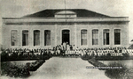
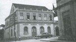
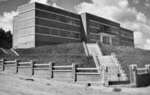

Colégio Barão de Rio Negro - Memórias
Esta página tem como objetivo compartilhar e resgatar as memórias do Colégio Barão de Rio Negro, nosso Colégio já centenário, desde 1912. Diferentes prédios por onde passaram muitos alunos, professores e funcionários. Alguns se transformaram em pessoas ilustres, outros no anonimato, mas que sempre guardaram com muito carinho o momento que passaram pelo Colégio Barão!
Memórias não compartilhadas e registradas acabam sendo esquecidas
-
1912
 -
1940
 -
1960
 -
1990
Prédios em que o Colégio Barão de Antonina funcionou, em diferentes momentos.
Clique na imagem para conhecer um pouco da história de cada prédio.
Nosso Estabelecimento
O Colégio Barão de Antonina de Rio Negro está localizado no centro de Rio Negro! Venha nos visitar!
Confira o desfile cívico de 2022 com a nossa Banda Marcial!